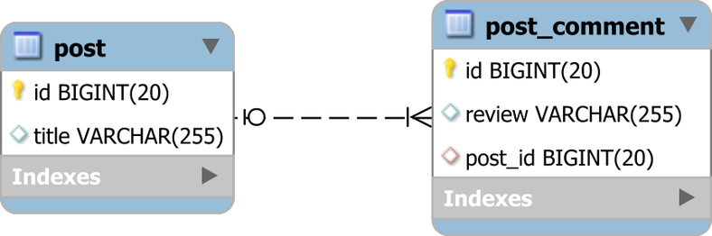
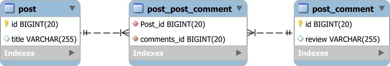

在关系数据库系统中，通过外键列来链接两个表之间的一对多关联，以便子表记录引用父表的主键。

尽管在关系型数据库管理系统（RDBMS）中可能很简单，但在涉及 JPA 时，一对多数据库关联可以通过 @ManyToOne 或 @OneToMany 关联来表示，因为面向对象编程（OOP）的关联可以是单向的，也可以是双向的。
@ManyToOne 注解允许您在子实体映射中映射外键列，以便子实体具有对其父实体的实体对象引用。这是映射数据库一对多数据库关联的最自然方式，通常也是最有效的替代方法。
为方便起见，为了利用实体状态转换和脏检查机制，许多开发人员选择将子实体映射为父对象中的集合，为此，JPA 提供 @OneToMany 注解。
很多时候，最好用查询替换集合，这在查询性能方面要灵活得多。但是，有时候映射集合是正确的事情，然后你有两个选择：
单向 @OneToMany 关联
双向 @OneToMany 关联
双向关联要求子实体映射提供 @ManyToOne 注解，该注解负责控制关联 。
另一方面，单向 @OneToMany 关联更简单，因为它只是在父端定义关系。在本文中，我将解释 @OneToMany 关联的问题，以及如何克服它们。
映射 @OneToMany 关联的方法有很多种。我们可以使用List或Set。 我们也可以定义@JoinColumn注释。 那么，让我们看看所有这些是如何工作的。
@OneToMany考虑我们有以下映射：
1 2 3 4 5 6 7 8 9 10 11 12 13 14 15 16 17 18 19 20 21 22 23 24 25 26 27 28 29 30 31 @Entity(name = "Post") @Table(name = "post") public class Post @Id @GeneratedValue private Long id; private String title; @OneToMany( cascade = CascadeType.ALL, orphanRemoval = true ) private List<PostComment> comments = new ArrayList<>(); } @Entity(name = "PostComment") @Table(name = "post_comment") public class PostComment @Id @GeneratedValue private Long id; private String review; }
现在，如果我们持久化1个 Post 和3个 PostComment：
1 2 3 4 5 6 7 8 9 10 11 12 13 Post post = new Post("First post" ); post.getComments().add( new PostComment("My first review" ) ); post.getComments().add( new PostComment("My second review" ) ); post.getComments().add( new PostComment("My third review" ) ); entityManager.persist(post);
Hibernate 将执行以下 SQL 语句：
1 2 3 4 5 6 7 8 9 10 11 12 13 14 15 16 17 18 19 20 insert into post (title, id ) values ('First post' , 1 ) insert into post_comment (review, id ) values ('My first review' , 2 ) insert into post_comment (review, id ) values ('My second review' , 3 ) insert into post_comment (review, id ) values ('My third review' , 4 ) insert into post_post_comment (Post_id, comments_id) values (1 , 2 ) insert into post_post_comment (Post_id, comments_id) values (1 , 3 ) insert into post_post_comment (Post_id, comments_id) values (1 , 4 )
那是什么！为什么执行这么多查询？无论如何，post_post_comment 表的处理是什么？
默认情况下，这就是单向 @OneToMany 关联的工作方式，这是从数据库角度看它的样子：

对于数据库管理员（DBA）来说，这看起来更像是多对多数据库关联而不是一对多关系，并且它也不是很有效。 我们现在有三个表，而不是两个表，所以我们使用的存储空间超过了必要的数量。本来应该只有一个外键，我们现在有两个。我们最有可能将这些外键编入索引，因此我们需要两倍的内存来缓存此关联的索引。不太好！
@JoinColumn 的单向 @OneToMany要解决上述额外的连接表问题，我们只需要添加 @JoinColumn：
1 2 3 @OneToMany(cascade = CascadeType.ALL, orphanRemoval = true) @JoinColumn(name = "post_id") private List<PostComment> comments = new ArrayList<>();
@JoinColumn 注解帮助 Hibernate（最着名的 JPA 提供者）找出 post_comment 表中一个 post_id 外键列来定义这种关联。
有了这个注释，当持久化三个 PostComment 实体时，我们得到以下 SQL 输出：
1 2 3 4 5 6 7 8 9 10 11 12 13 14 15 16 17 insert into post (title, id ) values ('First post' , 1 ) insert into post_comment (review, id ) values ('My first review' , 2 ) insert into post_comment (review, id ) values ('My second review' , 3 ) insert into post_comment (review, id ) values ('My third review' , 4 ) update post_comment set post_id = 1 where id = 2 update post_comment set post_id = 1 where id = 3 update post_comment set post_id = 1 where id = 4
好一点，但这三个更新语句的目的是什么？
如果你看一下 Hibernate flush order ，你会发现在处理集合元素之前执行了持久化操作。 这样，Hibernate 首先插入子记录而不使用外键，因为子实体不存储此信息。 在集合处理阶段，外键列会相应更新。
相同的逻辑适用于集合状态修改，因此从子集合中删除第一项时：
1 post.getComments().remove(0 );
Hibernate 执行两个语句而不是一个：
1 2 3 update post_comment set post_id = null where post_id = 1 and id = 2 delete from post_comment where id =2
同样，首先执行父实体状态更改，这将触发子实体更新。之后，当处理集合时，orphan removal 操作将执行子行删除语句。
@OneToMany映射 @OneToMany 关联的最佳方法是依赖 @ManyToOne 端传播所有实体状态更改：
1 2 3 4 5 6 7 8 9 10 11 12 13 14 15 16 17 18 19 20 21 22 23 24 25 26 27 28 29 30 31 32 33 34 35 36 37 38 39 40 41 42 43 44 45 46 47 48 49 50 51 52 53 54 55 56 57 @Entity(name = "Post") @Table(name = "post") public class Post @Id @GeneratedValue private Long id; private String title; @OneToMany( mappedBy = "post", cascade = CascadeType.ALL, orphanRemoval = true ) private List<PostComment> comments = new ArrayList<>(); public void addComment (PostComment comment) comments.add(comment); comment.setPost(this ); } public void removeComment (PostComment comment) comments.remove(comment); comment.setPost(null ); } } @Entity(name = "PostComment") @Table(name = "post_comment") public class PostComment @Id @GeneratedValue private Long id; private String review; @ManyToOne(fetch = FetchType.LAZY) @JoinColumn(name = "post_id") private Post post; @Override public boolean equals (Object o) if (this == o) return true ; if (!(o instanceof PostComment )) return false ; return id != null && id.equals(((PostComment) o).id); } @Override public int hashCode () return 31 ; } }
关于上述映射有几点需要注意：
@ManyToOne 关联使用 FetchType.LAZY，否则，我们将使用 EAGER 提取，这对性能有害 。父实体 Post 有两个实用方法（例如 addComment 和 removeComment），用于同步双向关联的两端。 无论何时使用双向关联，都应始终提供这些方法，否则，您将面临非常微妙的状态传播问题 。
子实体 PostComment 实现了 equals 和 hashCode 方法。 由于我们不能依赖自然标识符进行相等性检查，因此我们需要使用实体标识符。但是，您需要正确执行此操作，以使所有实体状态转换中的相等性保持一致。因为我们依赖于 removeComment 的相等性，所以在双向关联中覆盖子实体的 equals 和 hashCode 是一种好习惯。
如果我们持久化3个 PostComment:
1 2 3 4 5 6 7 8 9 10 11 12 13 Post post = new Post("First post"); post.addComment( new PostComment("My first review") ); post.addComment( new PostComment("My second review") ); post.addComment( new PostComment("My third review") ); entityManager.persist(post);
Hibernate 为每个持久化的 PostComment 实体生成一个 SQL 语句：
1 2 3 4 5 6 7 8 9 10 11 insert into post (title, id ) values ('First post' , 1 ) insert into post_comment (post_id, review, id ) values (1 , 'My first review' , 2 ) insert into post_comment (post_id, review, id ) values (1 , 'My second review' , 3 ) insert into post_comment (post_id, review, id ) values (1 , 'My third review' , 4 )
如果我们移除一个 PostComment:
1 2 3 4 Post post = entityManager.find( Post.class, 1L ); PostComment comment1 = post.getComments().get( 0 ); post.removeComment(comment1);
只有一个删除 SQL 语句被执行:
1 delete from post_comment where id = 2
因此，双向 @OneToMany 关联是在我们真正需要在父端映射一对多关系集合时的最佳方式。
@ManyToOne虽然你可以有选择的使用 @OneToMany 注解，但这并不意味着它应该是每个一对多数据库关系的默认选项。 集合的问题在于，当子记录的数量相当有限时，我们才使用它们。
因此，实际上，@OneToMany 只有当 Many(多) 意味着 Few(一些) 时才是实用的。也许 @OneToFew
正如我在此 StackOverflow回答 中所解释的那样，您无法限制 `@OneToMany 集合的大小，就像您使用查询级别分页一样。
因此，大多数情况下，子项上的 @ManyToOne 注解就是您需要的一切。 但是，如何获得与 Post 实体关联的子实体？
好吧，你只需要一个JPQL查询：
1 2 3 4 5 6 List<PostComment> comments = entityManager.createQuery( "select pc " + " from PostComment pc " + " where pc.post.id = :postId", PostComment.class) .setParameter( " postId", 1L ) .getResultList();
这会转换为简单的 SQL 查询：
1 2 3 4 5 select pc.id AS id1_1_, pc.post_id AS post_id3_1_, pc.review AS review2_1_ from post_comment pcwhere pc.post_id = 1
即使不再管理集合，在必要时添加/删除子实体也相当简单。 至于更新子对象，即使您不使用托管集合，脏检查机制也可以正常工作。 使用查询的好处在于，您可以按照自己喜欢的方式对其进行分页，这样，如果子实体的数量随时间增长，则应用程序性能不会受到影响。
正如您将在以后的文章中看到的那样，双向集合比单向集合更好，因为它们依赖于 @ManyToOne 关联，它在生成的 SQL 语句方面始终是高效的。
但是，即使它们非常方便，您也不必总是使用集合。 @ManyToOne 关联是映射一对多数据库关系的最自然且最有效的方式。
原文链接